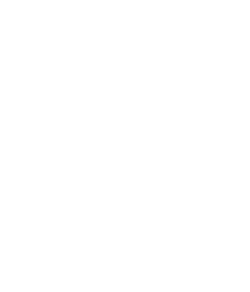

Vi är en ideell förening och ett kollektiv som delar mer än en adress – vi hjälps åt, umgås och bygger gemenskap i vardag och fest.

Två kvällar i veckan dukar vi upp till gemensam middag där vi turas om att laga mat. Det blir ofta en plats för skratt, samtal och nya idéer – lika mycket en måltid som en mötesplats.

Utöver våra egna, fullt utrustade lägenheter delar vi på omkring 300 kvadratmeter gemensamma utrymmen. Här finns lek-, hobby-, gäst- och vardagsrum, en stor matsal med uteplats och två fantastiska takterrasser med utsikt över staden. De här ytorna används flitigt, både för planerade aktiviteter och spontant umgänge. Vi har haft allt från loppisar och fester till luciatåg för barnen och filmkvällar för hela huset.
